1. Khởi nghĩa Yên Thế (1884–1913) – Hoàng Hoa Thám
Kéo dài gần 30 năm nhưng không thành công.
Do lực lượng mỏng, Pháp tập trung đàn áp mạnh, nghĩa quân dần suy yếu.

 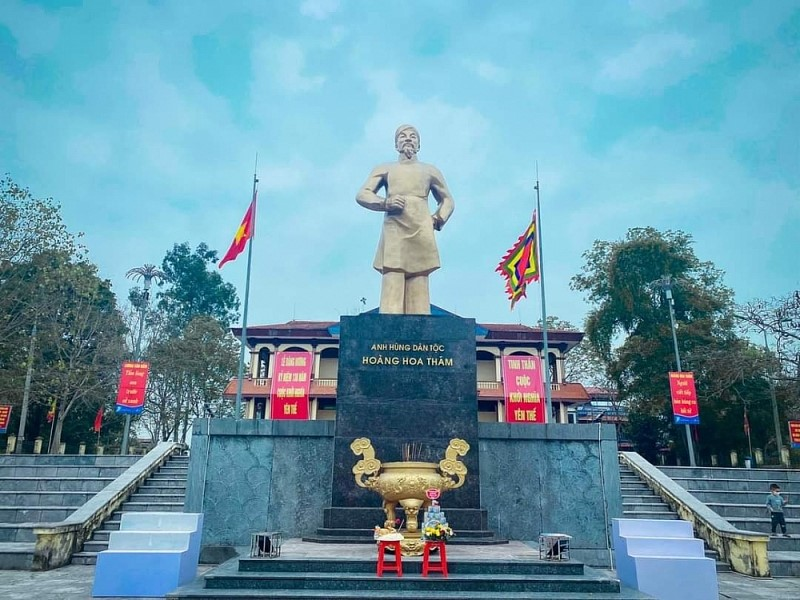
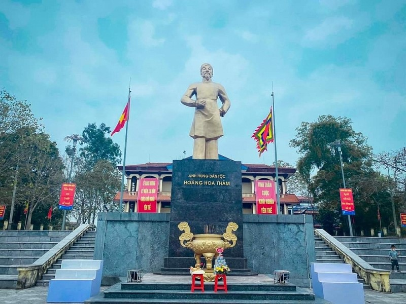
Kéo dài gần 30 năm nhưng không thành công.
Do lực lượng mỏng, Pháp tập trung đàn áp mạnh, nghĩa quân dần suy yếu.
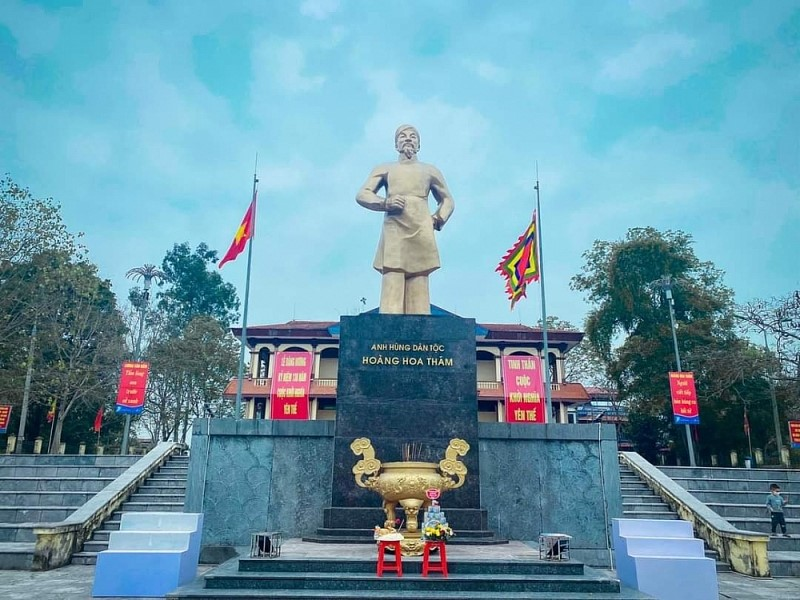
Một trong những phong trào mạnh nhất Cần Vương.
Thất bại do Pháp dùng chiến thuật “vườn không nhà trống”, bắt được tướng
Cao Thắng.
 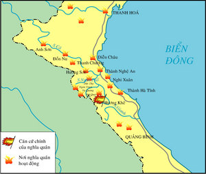
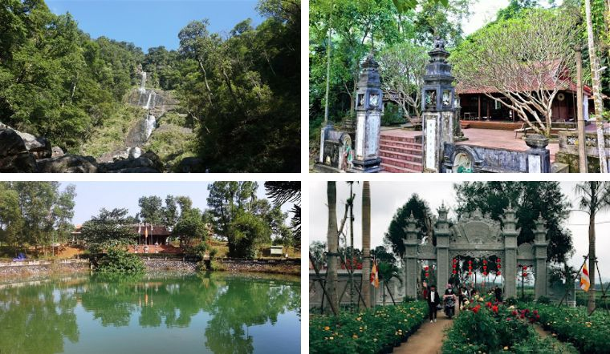
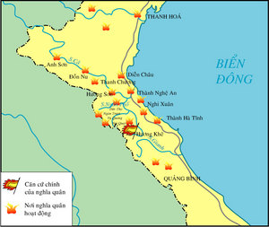
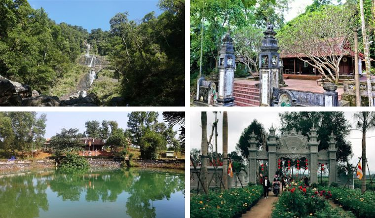
Nghĩa quân xây căn cứ kiên cố nhưng vẫn không chống nổi hỏa lực mạnh của Pháp.
 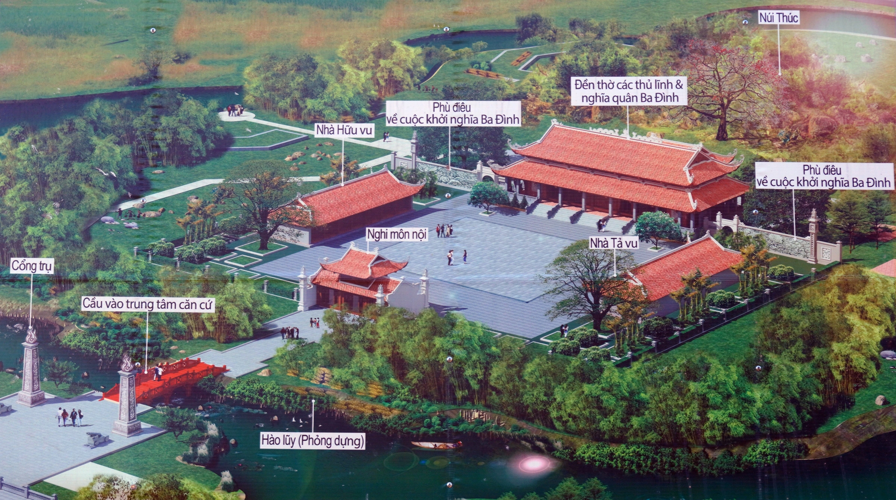
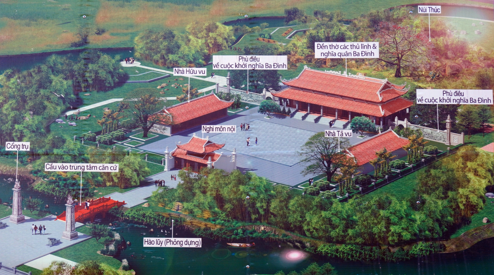
Mang tinh thần Cần Vương nhưng bị đàn áp mạnh, lực lượng tan rã.
 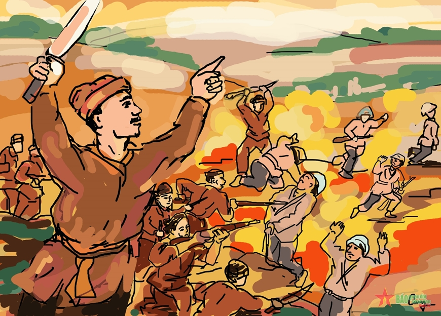
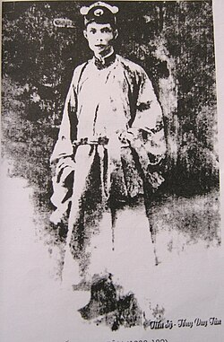
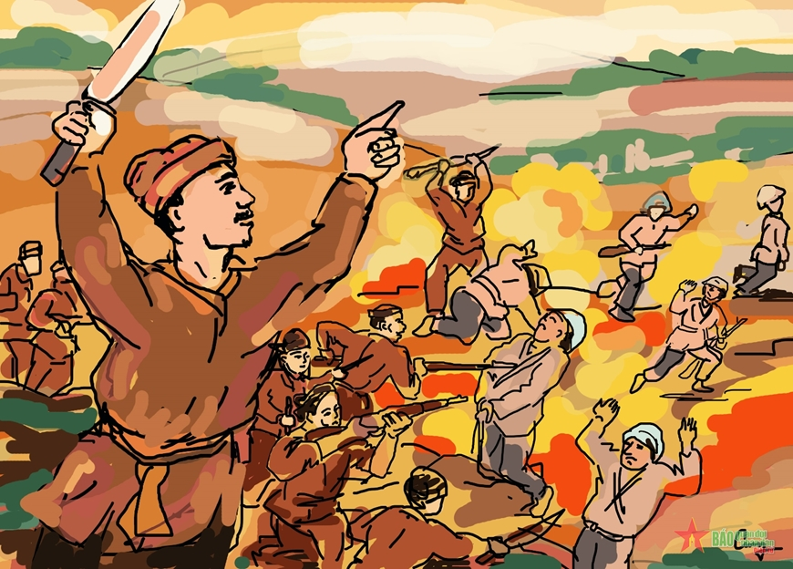
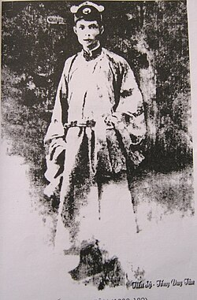
Phong trào cải cách giáo dục, mở trường học mới.
Không thành công vì bị Pháp đóng cửa, đàn áp.
 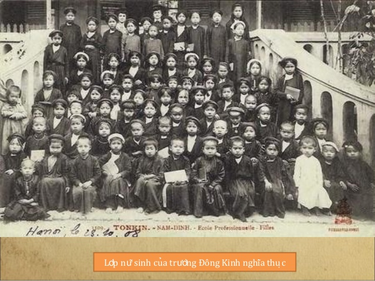
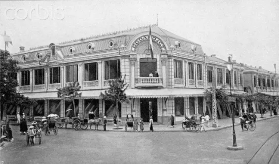
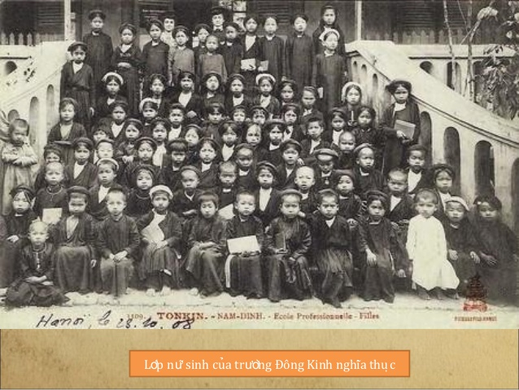
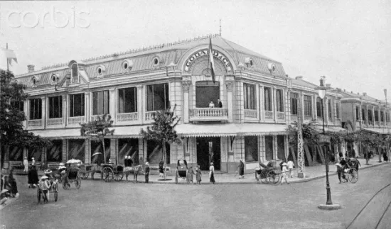
Do Phan Bội Châu lãnh đạo.
Thất bại do tổ chức lỏng lẻo, khó hoạt động trong nước.